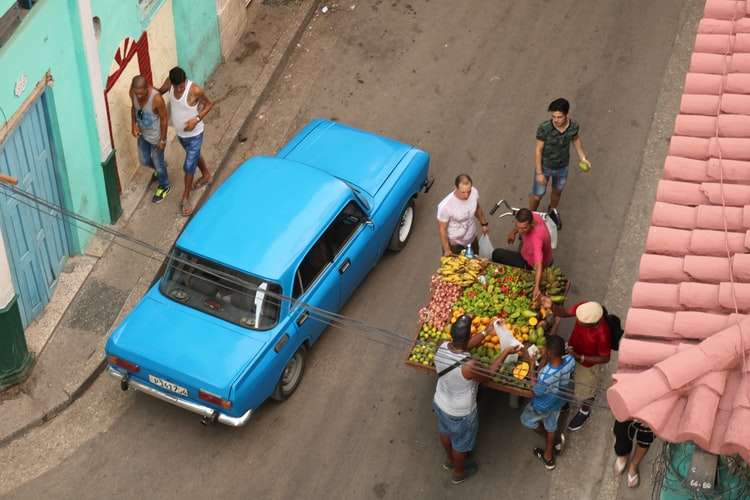

Tips for Eco-Friendly Food Shopping
For many of us, a good local farmers’ market or a sustainable food co-op that sells meat and seafood as well as produce makes eco-friendly shopping extremely easy. For those who have to look elsewhere, here are some simple eco tips for shopping that you can use to plan your menus, shop for food or for when you dine out. After a while, these eco-tips for shopping will be second nature and how you shop for almost everything:
Shop locally
Local farm shops are where you can find the freshest foods that taste good and have a higher nutritional value than foods that have been in transit. Some local farms have open days where you can learn more about land use and farming methods. Buying local goods also supports businesses to thrive. Some local supermarkets have sections for local products or have their own produce, grown on their roof space, for sale in the vegetable section.
Buy organic
When looking for organic food, it is wise to do some homework. One of our eco-tips here is to be aware that whilst organic food is grown without pesticides; it can still have detrimental environmental effects. The organic food may have come from a large farm operation and been flown in, creating more carbon emissions and having to be processed to stay preserved in transit. It’s a good idea to investigate organic brands you like and see if you approve of their environmental record.
East in season
Eating foods that are out of season, means that you have to pay the price for distance transport, which uses fossil fuels which cause air pollution. Seasonal foods are the cheapest, and if there is any ripe food left at the end of the farmers’ market, you may just find that you get a good deal if they don’t want to return home with it.
Buy responsibly
If you want to continue eating meat, cut back but choose quality cuts of meat. Other eco-tips for shopping for meat is sourcing animals that have been raised free-range, as they do not damage the ground as much as other more intensive farming methods. They are also less likely to have needed to take antibiotics. Currently, methane from animal manure and the energy needed to grow and transport animal feed means that the world’s livestock accounts for 18 per cent of greenhouse gases, so just reducing meat intake will help the environment.
Bulk buy
Buying items that are individually wrapped can add tons of extra packaging to landfill. Buying in bulk reduces the amount of packaging, so, for example, a 10-litre bottle of water can be decanted into a glass bottle when you need it. When it comes to food, separate the products into smaller amounts at home in reusable containers that you can store in a cupboard, freezer or fridge. If you don't know what products to buy check our article.